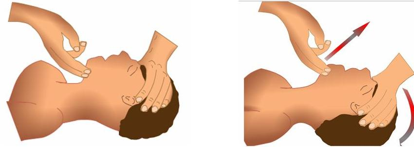

El Protocolo PAS es una guía de actuación vital en emergencias. Sigue estos tres pasos en orden:
Proteger: Asegura la zona para protegerte a ti mismo y a la víctima. Señaliza el
lugar y elimina cualquier peligro inmediato.
Avisar: Llama a los servicios de emergencia (112) e informa claramente sobre la
ubicación, el número de víctimas y la situación.
Socorrer: Atiende a las víctimas según tus conocimientos. Si no sabes qué hacer,
mantén la calma, tranquilízalas y sigue las instrucciones del operador de emergencias.
El orden es crucial: Proteger → Avisar → Socorrer.
Qué es la RCP
Asegura la zona para protegerte a ti mismo y a la víctima. Señaliza el
lugar y elimina cualquier peligro inmediato.
Llama a los servicios de emergencia (112) e informa claramente sobre la
ubicación, el número de víctimas y la situación.
Atiende a las víctimas según tus conocimientos. Si no sabes qué hacer,
mantén la calma, tranquilízalas y sigue las instrucciones del operador de emergencias.
Mini Juego
¿La persona esta Consciente?
Hay que comprobar que la persona tenga pulso, ya que es lo que nos indicará que el corazón sigue
latiendo, se puede comprobar en lugares como la muñeca o el cuello.
¿Tiene Pulso?
¿Ha recuperado el pulso?
En el caso de haber recuperado el pulso esperaremos al personal sanitario que previamente abremos llamdo
con el protocolo PAS Proteger Avisar con ello podremos asegurar la integridad de la victima
En el caso de no recuperar el pulso si disponemos de un Desfibrilador Externo Semiautomático el cual
ayudara dando cargas electricas al corazon controladas las cuales realimaran a la victima. En el caso
que alla reaimado esperaremos a la asistencia medica para una mejor atencion a la victima manteniendolo
posteriormente de la reanimacion en posicion la teral de seguridad
La primera acción que deberemos de comprobar es si la víctima respira deberemos de apoyar la cabeza en su
pecho mirando que su pecho se eleve
¿Respira?
Compresiones Torácicas (RCP)
Mantendremos la calma
como en el protocolo PAS Proteger , Avisar y Socorrer pide ayuda a otro persona si lo necesitas para que
te ayude si es necesario. Deberemos realizar las siguientes acciones las cuales ayudaran a la pronta
recuperación de la víctima. Realizar la maniobra de Frente-mentón
Posición de la Víctima: Asegúrate de que la víctima esté tendida boca arriba
(decúbito supino) sobre una superficie dura y plana.
Colocación de Manos: Mano en la Frente: Coloca la palma de una mano firmemente
sobre la frente de la víctima.
Dedos en el Mentón: Coloca la yema de los dedos índice y medio (o solo el índice) de tu otra
mano bajo la parte ósea del mentón (barbilla) de la víctima. Es crucial no presionar la parte
blanda debajo del mentón, ya que esto podría obstruir la vía aérea.
Ejecución de la Maniobra:
Inclinar la Cabeza: Ejerce una presión suave pero constante con la mano que está en la
frente, inclinando la cabeza de la víctima suavemente hacia atrás (hiperextensión).
Elevar el Mentón: Al mismo tiempo, levanta el mentón hacia arriba y hacia adelante con los dedos
de la otra mano.
Imagen Ilustrativa:
Posición Lateral de Seguridad (PLS)
Si la persona respira pero no está consciente, colóquela en la Posición Lateral de Seguridad para
mantener las vías respiratorias abiertas y evitar que se ahogue.
¿La persona responde bien?
de manera correcta, será un indicador de que no hay un problema mayor, en este caso verificar si ha
habido lesiones y ayudar a incorporarse en caso de caída.
En caso de que no responda de manera clara o no pueda vocalizar:
Habrá que llamar al 112 ya que estará desorientada por factores como: Fiebre alta, Intoxicación o abuso
de sustancias, Hipotermia o Hipertermia etc.
Atenderle en lo que llegan los servicios sanitarios, ya que puede tener problemas de orientación para
volver a casa (más común en ancianos).